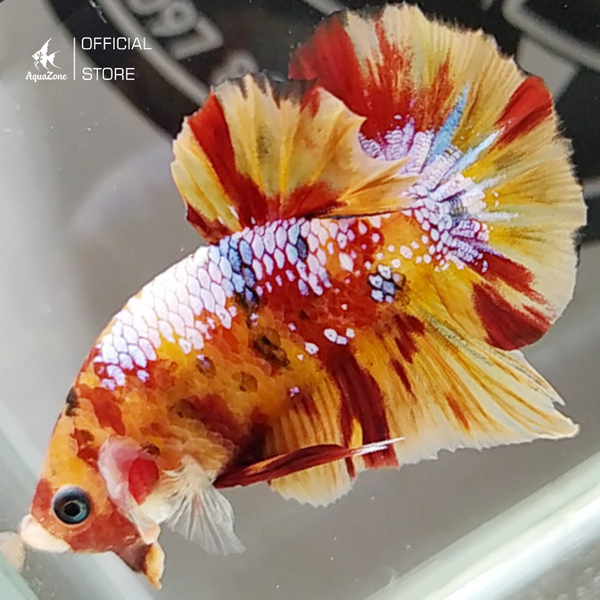

Trong các dòng cá cảnh trên thị trường hiện nay, cá Betta luôn chiếm vị trí đặc biệt, được yêu thích không chỉ bởi vẻ đẹp ngoại hình mà còn bởi tính cách độc đáo và sự phong phú về màu sắc. Tại Việt Nam, sở hữu một bể cá Betta đẹp mắt không chỉ là niềm đam mê mà còn là một hành trình khám phá về sự đa dạng trong thế giới cá cảnh. Hãy cùng Aquazone tổng hợp và khám phá các dòng cá Betta được yêu thích nhất tại Việt Nam.
Cá Betta, còn được biết đến là cá Siamese Fighting Fish, là một dòng cá nổi tiếng và độc đáo trong thế giới cá cảnh. Chúng thuộc họ Osphronemidae và có nguồn gốc từ các vùng nước ngọt ở Đông Nam Á, như Thái Lan, Campuchia, Lào và Việt Nam. Dòng cá này nổi tiếng không chỉ vì vẻ ngoại hình đẹp mắt mà còn vì tính cách đặc biệt và khả năng chiến đấu cao, đặc trưng là tình trạng "quậy phá" giữa hai con cá đực khi chúng gặp nhau.
Dòng cá Betta được yêu thích hiện nay
Dưới đây là một số đặc điểm quan trọng về cá Betta:
Về Ngoại Hình:
- Cá Betta có vẻ ngoại hình độc đáo và đẹp mắt, với các màu sắc rực rỡ và vân sắc tố.
- Đuôi của chúng có thể có nhiều hình dạng khác nhau như đuôi voan, đuôi cánh sen, đuôi lá cờ, và nhiều loại
khác nhau.
Tính Cách:
- Cá Betta thường rất độc lập và tự chủ, chúng có thể sống một mình mà không cần đến bạn bè trong cùng một bể cá.
- Tuy nhiên, đối với các con cá đực, chúng có thể trở nên quậy phá và hung dữ khi gặp nhau, do đó, việc nuôi cặp
cá Betta đực nên được thực hiện cẩn thận.
Chăm Sóc:
- Bể cá cho cá Betta cần được thiết kế sao cho không có những vật dụng sắc nhọn có thể gây tổn thương cho chúng.
- Nước trong bể cần được duy trì ấm độ và có chất lượng tốt. Các hệ thống lọc và thay nước đều đặn là quan trọng
để đảm bảo môi trường sống lành mạnh cho cá.
Bây giờ, chúng ta sẽ cùng nhau tìm hiểu cá dòng cá Betta đẹp mắt và được nhiều người chơi thủy sinh lựa chọn, đó là:
Cá Betta bò sữa, với vẻ đẹp độc đáo, đã chiếm trọn trái tim của người yêu cá cảnh. Được biết đến với màu sắc trắng như những chú bò sữa, kết hợp một cách tinh tế với các tông màu xanh, vàng hoặc đỏ, Betta bò sữa tạo nên điểm nhấn đặc sắc cho bể cá thủy sinh của bạn.
Cá Betta bò sữa
Sự đa dạng về mẫu dáng và màu sắc của Betta bò sữa mang lại một trải nghiệm thị giác đặc sắc cho người chơi cá cảnh. Mỗi con cá đều là một kiệt tác riêng, đưa người nuôi cá đến với thế giới của sự sáng tạo và phong cách.
Betta bò sữa không chỉ là một phần của bể cá mà còn là nguồn cảm hứng vô tận. Tính cách độc lập và tinh tế của chúng tạo ra một môi trường sống động và sống động. Đối với những người yêu thú cưng nước ngọt, Betta bò sữa không chỉ là một loại cá cảnh, mà là một nguồn ngẫu nhiên không ngừng của vẻ đẹp độc đáo.
Cá Betta Dumbo Dứa với viền trắng và ánh xanh đã tạo nên một hình ảnh tuyệt vời như những thiên thần trong thế giới cá cảnh nước ngọt. Được biết đến với đặc điểm tai lớn như tai dumbo, chúng không chỉ thu hút người chơi cá cảnh bởi vẻ đẹp độc đáo mà còn bởi tính cách quý phái và tinh tế.
Cá Betta Dumbo dứa
Màu xanh nổi bật trên cơ thể của Betta Dumbo Dứa, kết hợp với viền trắng quanh vây, tạo nên một hình ảnh rực rỡ và quyến rũ. Điều này đã khiến cho dòng cá này trở thành nguồn cảm hứng không ngừng trong thế giới cá cảnh, nơi mà sự đa dạng và sáng tạo được đặt lên hàng đầu.
Khả năng sống động và linh hoạt của Betta Dumbo Dứa khiến chúng trở thành điểm nhấn lý tưởng trong bể cá. Được dân chơi cá ví là thiên thần của thế giới cá cảnh nước ngọt, Betta Dumbo Dứa không chỉ là một loại cá cảnh, mà là một biểu tượng của vẻ đẹp và tinh tế trong việc nuôi cá.
Cá Betta Nemo Galaxy là một trong những dòng Betta độc đáo và thu hút sự chú ý trong cộng đồng nuôi cá cảnh. Được tạo ra thông qua quá trình lai tạo giữa Betta xiêm Nemo và Betta Galaxy, mẫu cá này mang đến vẻ ngoại hình độc đáo và quyến rũ.
Cá Betta Nemo Galaxy
Với đặc điểm của Betta Nemo, màu sắc chủ đạo thường là cam xen lẫn trắng, tạo nên sự dễ thương và trẻ trung. Khi kết hợp với gen của Betta Galaxy, một loại có các đường vân màu sắc như dải ngân hà, Betta Nemo Galaxy trở nên lộng lẫy và độc đáo hơn bao giờ hết.
Màu sắc chủ đạo của Betta Red Fancy thường là đỏ tươi sáng, tạo nên một diện mạo rực rỡ và quyến rũ. Điểm đặc biệt nổi bật nhất là đuôi, thường được thiết kế với độ dày và đẹp mắt. Điều này tạo ra một cảm giác vương giả và sang trọng khi Betta Red Fancy di chuyển trong bể cá.
Cá Betta Red Fancy Star
Betta Red Fancy không chỉ thu hút người chơi cá cảnh bởi vẻ đẹp mê hoặc mà còn là biểu tượng của sự quý phái và độc đáo trong thế giới cá cảnh. Việc chăm sóc và nuôi dưỡng Betta Red Fancy đòi hỏi sự quan tâm đặc biệt để giữ cho màu sắc và hình dạng của chúng luôn ấn tượng, tạo nên một điểm nhấn tuyệt vời cho bất kỳ bể cá nào.